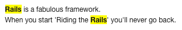
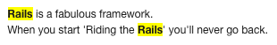

A Note on Memoization in Rails
If you've been following along at home, you know that memoization was added to Rails 2.2 as a shortcut for a common idiom:
[sourcecode language='ruby']
def site_term_ids
@site_term_ids || = cached_terms.split.map
{ |term| Term.find_by_query(term).id }
end
[/sourcecode]
Memoization makes it possible to perform an expensive operation once, and then cache the results for future calls to the same property. What you may have missed, though, is that this isn't baked into Active Record; it's a separate part of Active Support. So if you're getting mystery errors about memoization not working, be sure you're including the right extension:
[sourcecode language='ruby']
class Site < ActiveRecord::Base
extend ActiveSupport::Memoizable
def site_term_ids
cached_terms.split.map
{ |term| Term.find_by_query(term).id }
end
memoize :site_term_ids
end
[/sourcecode]
[sourcecode language='ruby']
def site_term_ids
@site_term_ids || = cached_terms.split.map
{ |term| Term.find_by_query(term).id }
end
[/sourcecode]
Memoization makes it possible to perform an expensive operation once, and then cache the results for future calls to the same property. What you may have missed, though, is that this isn't baked into Active Record; it's a separate part of Active Support. So if you're getting mystery errors about memoization not working, be sure you're including the right extension:
[sourcecode language='ruby']
class Site < ActiveRecord::Base
extend ActiveSupport::Memoizable
def site_term_ids
cached_terms.split.map
{ |term| Term.find_by_query(term).id }
end
memoize :site_term_ids
end
[/sourcecode]
Double Shot #389
Wednesday always seems to be "mad scramble" day around here. But busy is good.
Scaling Rails Screencasts - The official announcement of Gregg Pollack's new and excellent-looking series.
Moving to Jekyll - Michael Bleigh has ported his blog over and it looks pretty good. I suppose I ought to consider the same but the notion of migrating is daunting.
Rails vs. Django - A short ramble that doesn't get bogged down in the usual hurling of misconceptions and rumors in either direction.
Double Shot #388
Well, after joining the Rails Activists and the creation of ActionRails, I can finally complete my trifecta of Big Announcements for the year: I'm co-authoring Rails 3 In Action, to be published by Manning late this year. UPDATE: No, as it turns out, I'm not. For various reasons, I've dropped out of that book project.
Clearance: Rails authentication for developers who write tests - Yup, one more authentication library, this one from the ThoughtBot guys.
RSpec and Shoulda - Using the two together for maximum goodness.
Double Shot #387
If you want some help on a Rails/QuickBooks project, there's now some evidence that I know what I'm doing.
A RubyGems + GitHub proposal - Eric Hodel tries to sort out some of the current mess around installing, maintaining, and trusting gems.
Guide to Rails Metal - Someone has actually been messing around with this enough to write about it.
capistrano-configuration - Management tool to handle various configuration tasks post-deployment.
Instant Web Stress Test - The Monitis folks have a new pay service doing ad-hoc load testing across the net.
Region Folding in TextMate - There have certainly been times I've wanted this.
February 2009: Tools on the edge - List and writeups of some of the things ENTP uses to get Rails done.
Scaling Rails - New video series from Gregg Pollack, sponsored by New Relic.
Mephisto 0.8.2 Released - A bunch of updates for this Rails blog software.
Radiant 0.7.0 Release - And the Radiant CMS is still under active development too.
The Incredible Rising Version Number - Noel Rappin discusses ways to keep up with edge Rails.
Double Shot #386
Another milestone for me yesterday: the first time one of my patches broke the main Rails build.
Capistrano 2.5.4 - New release with a few important bug fixes.
Rails Training with Intridea University - Another company throws their hat into the Rails instruction ring.
Is It Ruby 1.9? - Community-driven site to collect reports on gem compatibility with the latest ruby.
Digging Into the Named Scope Magic
I got an IM this afternoon from a friend, pointing to part of the Active Record Query Interface guide:
Setting up a simple named scope and testing it in irb certainly seems to indicate that this passage is wrong:
[sourcecode language='ruby']
Client.males.is_a?(Array) => true
Client.males.is_a?(ActiveRecord::NamedScope::Scope)
=> false
[/sourcecode]
And yet, a moment's reflection says that named scopes can't simply be returning arrays of ActiveRecord objects: if they were, there would be no way to compose them.
As with other Rails questions, the easiest way to answer this is to fire up a text editor and dig into the Rails source - in this case, activerecord/lib/active_record/named_scope.rb, which contains the definition of the
[sourcecode language='ruby']
NON_DELEGATE_METHODS = %w(nil? send object_id class extend find size
count sum average maximum minimum paginate first last empty? any?
respond_to?).to_set
[].methods.each do |m|
unless m =~ /^__/ || NON_DELEGATE_METHODS.include?(m.to_s)
delegate m, :to => :proxy_found
end
end
[/sourcecode]
So: except for a small set of explicitly-listed methods, the
[sourcecode language='ruby']
def proxy_found
@found || load_found
end
def load_found
@found = find(:all)
end
[/sourcecode]
So: for any method not in its small list - say, the
Then you could call Client.males.all to get all the clients who are male. Please note that if you do not specify the all on the end you will get a Scope object back, not a set of records which you do get back if you put the all on the end.
Setting up a simple named scope and testing it in irb certainly seems to indicate that this passage is wrong:
[sourcecode language='ruby']
Client.males.is_a?(Array) => true
Client.males.is_a?(ActiveRecord::NamedScope::Scope)
=> false
[/sourcecode]
And yet, a moment's reflection says that named scopes can't simply be returning arrays of ActiveRecord objects: if they were, there would be no way to compose them.
As with other Rails questions, the easiest way to answer this is to fire up a text editor and dig into the Rails source - in this case, activerecord/lib/active_record/named_scope.rb, which contains the definition of the
Scope object and the other named scope apparatus. There you'll find this chunk of code:[sourcecode language='ruby']
NON_DELEGATE_METHODS = %w(nil? send object_id class extend find size
count sum average maximum minimum paginate first last empty? any?
respond_to?).to_set
[].methods.each do |m|
unless m =~ /^__/ || NON_DELEGATE_METHODS.include?(m.to_s)
delegate m, :to => :proxy_found
end
end
[/sourcecode]
So: except for a small set of explicitly-listed methods, the
Scope object delegates everything to :proxy_found. And what is that? Read a bit further in the source and you'll find out:[sourcecode language='ruby']
def proxy_found
@found || load_found
end
def load_found
@found = find(:all)
end
[/sourcecode]
So: for any method not in its small list - say, the
inspect that IRB uses to display the value of an expression - the Scope looks at its internal results array, running the find to do so if necessary. Thus we have an object that at first glance appears to be something other than what it really is. Problem solved.Double Shot #385
Just a couple of links this morning. Send more!
Rfactor: Ruby Refactoring for your loved editor - Early work on a refactoring bundle for TextMate.
SASS: The Better, More Powerful CSS - Another pitch for SASS, with some examples.
Double Shot #384
Have I mentioned lately that we're available for hire? Well, we are.
3-0-unstable Merge - Now that 2.3 RC1 is out, things are heating up on the Rails 3.0 front.
Speculating with Shoulda - News of shoulda development, including RSpec compatibility.
Spree 0.6.0 Released - This open source commerce platform now runs on Rails 2.2.2 and makes use of I18n features in Rails.
Easy Git! - Git training wheels for Subversion users.
Rails Guides Gets a Facelift - A new look for one of the documentation projects that I'm involved with.
Double Shot #383
More playing around with Rails and Twitter: TrackLifeTweets.
Considerations for Creating a Test-Driven Ruby Project - Some thoughts about how to organize tests for a long and happy project.
RSpec works with test/unit - Yes, there is interoperability.
Getting ready for Ruby 1.9.1 - Passenger is 1.9.1 compatible now, and they've got patches for fastthread and sqlite.
Git Status in Your Prompt - I finally got around to doing this, and wish I had done it earlier.
Developers Warm to New Ruby on Rails 2.3 Update - eWeek coverage, complete with link to my partner.
Stop picking on alias_method_chain - Not everyone likes the direction that Rails 3.0 is headed in.
elemental - A sort of enumerated constant gem to make code simpler.
Double Shot #382
Rails 2.3 is out in RC form. I expect most of you noticed that already.
Rolling out new updates for Rails Boxcar - Planet Argon has pushed their lowest price for VPS down to $35/month, where it becomes more interesting to play with (for me at least).
The RSpec Book is now in beta - After quite a wait, you can order this one and get a PDF draft.
What's New in Edge Rails: Nested Object Forms - Excellent writeup from Ryan Daigle.
Alternative Prawn handler for Rails - I haven't used the Prawn PDF library yet, but this looks useful.
scRUBYt! gem on Github - Worth a look if you have web scraping to do.
Ruby 1.9.1 & Friends - Ryan Bigg is doing excellent work at figuring out how to force Rails to work under the new version of Ruby.
Shuffling the Deck at WWD - All things change. I've left off writing for Web Worker Daily because I've got too much cooking in the Rails world these days.
Rails 2.3: Localized Views
One of the late-breaking changes to sneak into Rails 2.3 is localized views. If you're staying at all up to date, you know that Rails sports a nifty new internationalization framework as of version 2.2. But in 2.3, if you want to show different views depending on the visitor's locale, it's quite simple.
For example, suppose you have a
But why stop there? Rails doesn't impose any particular limits on the symbols that you can set for
[sourcecode language='ruby']
before_filter :set_expert_mode
def set_expert_mode
I18n.locale = :expert if current_user.expert?
end
[/sourcecode]
And then if you provide, say,
For example, suppose you have a
Pages controller with an about action. Ordinarily, this will render app/views/pages/about.html.erb. But if you set I18n.locale = :es, it will render app/views/pages/about.es.html.erb. If the localized template isn't present, the undecorated version will be used.But why stop there? Rails doesn't impose any particular limits on the symbols that you can set for
I18n.locale, so if you want, you can hijack this system to display different content depending on anything you want. For example, suppose you have some users who are "expert" who should see different pages. Just do something like this:[sourcecode language='ruby']
before_filter :set_expert_mode
def set_expert_mode
I18n.locale = :expert if current_user.expert?
end
[/sourcecode]
And then if you provide, say,
index.expert.html.erb, that version will be displayed to expert users. If there's no special view, they'll just get the normal content.
Highlighting Text in Rails
Presumably you've seen those Web 2.0 sites that highlight random words in the marketing text to draw your attention. A little-known view helper in Rails makes this sort of thing trivial. For example, you can combine this markup in your view:
[sourcecode language='ruby']
When you start 'Riding the Rails' you'll never go back.",
"Rails") %>
[/sourcecode]
With this bit of CSS:
[sourcecode language='css']
.highlight { background:#ff0; }
[/sourcecode]
And you get this result:

Easy enough. But wait, there's more! You can specify an entire array of words and phrases to highlight:
[sourcecode language='ruby']
[/sourcecode]
Even better,
[sourcecode language='ruby']
:highlighter => '\1') %>
[/sourcecode]
This ability to insert arbitrary surrounding markup makes
[sourcecode language='ruby']
:highlighter => '<a href="/users/%5C1">\1</a>) %>
[/sourcecode]
It's worth taking a dip into ActionView::Helpers occasionally to see what other bits of functionality are lurking that you've forgotten about.
[sourcecode language='ruby']
When you start 'Riding the Rails' you'll never go back.",
"Rails") %>
[/sourcecode]
With this bit of CSS:
[sourcecode language='css']
.highlight { background:#ff0; }
[/sourcecode]
And you get this result:

Easy enough. But wait, there's more! You can specify an entire array of words and phrases to highlight:
[sourcecode language='ruby']
[/sourcecode]
Even better,
highlight supports a :highlight option, which lets you specify a custom string to use for highlighting. The token \1 will be replaced with the text to be highlighted. This lets you change the HTML markup:[sourcecode language='ruby']
:highlighter => '\1') %>
[/sourcecode]
This ability to insert arbitrary surrounding markup makes
highlight more flexible, if you let yourself think out of the box:[sourcecode language='ruby']
:highlighter => '<a href="/users/%5C1">\1</a>) %>
[/sourcecode]
It's worth taking a dip into ActionView::Helpers occasionally to see what other bits of functionality are lurking that you've forgotten about.
Double Shot #381
Having great fun slowly working through a QuickBooks integration job.
Fluid 960 Grid System - Another alternative CSS system.
Introducing FireScope - An HTML/CSS reference tool that integrates with Firebug.
QuickBooks Example qbXML - Looks useful for anyone stuck in the QuickBooks integration mire.
Double Shot #380
Looks like I've got some time to put towards one more project soon, if anyone is looking to hire a Rails developer.
New Rails plugin - Quick Scopes - Automatic named scopes for limit, order, where and with.
Start using Amazon SimpleDB with ruby in 10 minutes n- Just what the title says.
Testing Active Record with JDBC
You probably already know, at least vaguely, that Rails is working on JRuby compatibility (it's most of the way there, but there are a few niggling bugs left). But did you know that Active Record also supports using a variety of databases via JDBC, which is a better fit for a JRuby-backed Rails installation than the usual sqlite or MySQL choices? As of a couple of days ago, you can easily see this in action by running the Active Record test suite. Here's how:
Grab a copy of edge Rails. You need to have a copy recent enough that it includes this commit.
You need to have JRuby installed. For the best experience with Rails, you should grab and build JRuby from its own edge. The JRubyWiki has instructions on downloading source and building yourself. Even if you don't know anything about java it's pretty simple. Here's how I did it on a Ubuntu box:
[sourcecode language='ruby']
sudo aptitude install sun-java6-jdk
mkdir jruby_trunk
svn co http://svn.codehaus.org/jruby/trunk/jruby jruby
cd jruby
svn up
ant
ant jar-complete
[/sourcecode]
I've got some aliases set up that make it easy to use JRuby as my interpreter when I want to. These go in .bash_login:
[sourcecode language='ruby']
alias jr='export PATH=/home/myuser/jruby_trunk/jruby/bin:/home/myuser/.gem/jruby/1.8/bin:$ORIGPATH'
alias mr187p72='export PATH=~/.multiruby/install/1.8.7-p72/bin:$ORIGPATH'
alias mr191rc1='export PATH=~/.multiruby/install/v1_9_1_rc1/bin:$ORIGPATH'
alias mroff='export PATH=$ORIGPATH'
[/sourcecode]
(Note that I have a couple of other Ruby versions installed on that box via multiruby as well).
You'll need to install some gems to run the Rails tests. Note the special switch to install them where JRuby will see them:
To use any of the JDBC adapters, install the glue between Active Record and JDBC:
[sourcecode language='ruby']
jruby -s gem install activerecord-jdbc-adapter
[/sourcecode]
You have your choice of lots of JDBC adapters. Let's install them all!
[sourcecode language='ruby']
jruby -s gem install activerecord-jdbc-adapter
jruby -s gem install activerecord-jdbcderby-adapter
jruby -s gem install activerecord-jdbch2-adapter
jruby -s gem install activerecord-jdbchsqldb-adapter
jruby -s gem install activerecord-jdbcmysql-adapter
jruby -s gem install activerecord-jdbcpostgresql-adapter
jruby -s gem install activerecord-jdbcsqlite3-adapter
[/sourcecode]
Time to get testing. For something easy, start with MySQL:
[sourcecode language='ruby']
cd ~/rails/activerecord
jruby -S rake test_jdbcmysql
[/sourcecode]
With edge Rails this morning, you'll get 19 test failures out of 1812 tests and 6032 assertions - not too bad. How about something more java-like, the hsqldb database engine?
[sourcecode language='ruby']
cd ~/rails/activerecord
jruby -S rake test_jdbchsqldb
[/sourcecode]
I'm getting around 600 test failures with this one at the moment.
Similar testing tasks exist for all of the other adapters I listed above. With these bits of glue coming into play, and the Rails and JRuby teams working together, we're making our way towards a point where Rails on JRuby is a robustly-supported solution.
Grab a copy of edge Rails. You need to have a copy recent enough that it includes this commit.
You need to have JRuby installed. For the best experience with Rails, you should grab and build JRuby from its own edge. The JRubyWiki has instructions on downloading source and building yourself. Even if you don't know anything about java it's pretty simple. Here's how I did it on a Ubuntu box:
[sourcecode language='ruby']
sudo aptitude install sun-java6-jdk
mkdir jruby_trunk
svn co http://svn.codehaus.org/jruby/trunk/jruby jruby
cd jruby
svn up
ant
ant jar-complete
[/sourcecode]
I've got some aliases set up that make it easy to use JRuby as my interpreter when I want to. These go in .bash_login:
[sourcecode language='ruby']
alias jr='export PATH=/home/myuser/jruby_trunk/jruby/bin:/home/myuser/.gem/jruby/1.8/bin:$ORIGPATH'
alias mr187p72='export PATH=~/.multiruby/install/1.8.7-p72/bin:$ORIGPATH'
alias mr191rc1='export PATH=~/.multiruby/install/v1_9_1_rc1/bin:$ORIGPATH'
alias mroff='export PATH=$ORIGPATH'
[/sourcecode]
(Note that I have a couple of other Ruby versions installed on that box via multiruby as well).
You'll need to install some gems to run the Rails tests. Note the special switch to install them where JRuby will see them:
jruby -S gem install mocha mysql postgres sqlite-ruby sqlite3-ruby fcgi rack jruby-opensslTo use any of the JDBC adapters, install the glue between Active Record and JDBC:
[sourcecode language='ruby']
jruby -s gem install activerecord-jdbc-adapter
[/sourcecode]
You have your choice of lots of JDBC adapters. Let's install them all!
[sourcecode language='ruby']
jruby -s gem install activerecord-jdbc-adapter
jruby -s gem install activerecord-jdbcderby-adapter
jruby -s gem install activerecord-jdbch2-adapter
jruby -s gem install activerecord-jdbchsqldb-adapter
jruby -s gem install activerecord-jdbcmysql-adapter
jruby -s gem install activerecord-jdbcpostgresql-adapter
jruby -s gem install activerecord-jdbcsqlite3-adapter
[/sourcecode]
Time to get testing. For something easy, start with MySQL:
[sourcecode language='ruby']
cd ~/rails/activerecord
jruby -S rake test_jdbcmysql
[/sourcecode]
With edge Rails this morning, you'll get 19 test failures out of 1812 tests and 6032 assertions - not too bad. How about something more java-like, the hsqldb database engine?
[sourcecode language='ruby']
cd ~/rails/activerecord
jruby -S rake test_jdbchsqldb
[/sourcecode]
I'm getting around 600 test failures with this one at the moment.
Similar testing tasks exist for all of the other adapters I listed above. With these bits of glue coming into play, and the Rails and JRuby teams working together, we're making our way towards a point where Rails on JRuby is a robustly-supported solution.
Double Shot #379
A slick coating of icy snow on everything says that this is a good day to work at home.
Nested Model Forms - Big new feature coming to Rails 2.3.
Rails Wiki - The new Rails Wiki is getting underway. Contributors welcome.
Ruby In Steel Developer 1.4 Released - More help for Rails devs on Windows.
Double Shot #378
Why do critical bugs always turn up at 1AM? Don't clients ever sleep?
rails-template - Nice example of what you can do with the templating stuff in Rails 2.3. (via Rails Inside)
aws_fps - Another plugin for connecting Rails applications to Amazon Flexible Payment Service.
RailsDevConf - Developer conference for Europe, announced now that O'Reilly is taking a year off from that market.
Typo 5.2 - This Rails-based blogging engine is still plugging along.
Double Shot #377
Just a few links to round out the week.
CommitChat - Chat based on GitHub comments and conversations. Dr. Nic is taking beta signups for this now.
Another approach to fixture replacement (in which we abuse named_scope) - Just what the title says.
acts_as_unvlogable - Grab details of videos from a dozen services, for embedding and thumbnailing and such. Looks useful.
Double Shot #376
Along with everything else, I'm having fun PM'ing the development of trackdailygoals.com.
JavaScript Performance Rocks! - New (and beta) ebook from Thomas Fuchs and Amy Hoy. I bought a copy, it looks very very useful.
Pushing and Pulling - A great look at some of the git basics from git ready.
Translate: New Rails I18n Plugin with a Nice Web UI - This looks very useful.
Jungle Disk 2.5 Released! - Backup to Amazon S3, now with Time Machine style restore UI (among other features).
ActionMailer Callbacks: In the Spirit of ActionController Filters - Surprising not to see this in Rails core, actually.
FakeWeb - A bit of mocking goodness I hadn't seen before.
Sinatra Book - Boy, everyone has a book but Rails, don't they?
Double Shot #375
And now...back to work.
When to Fire a Client - Sensible advice from the LessEverything guys. Fortunately, I haven't had to do this lately.
My Git Workflow - Michael Ivey reports.
[ANN] Ruby 1.9.1 Release Candidate 2 is released - Another upgrade I need to make.
subscribe via RSS